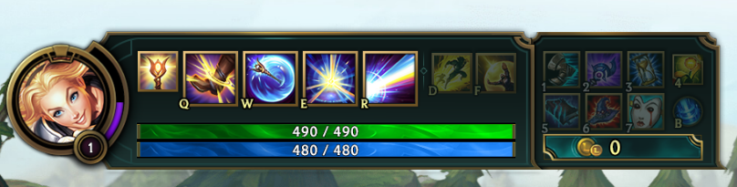
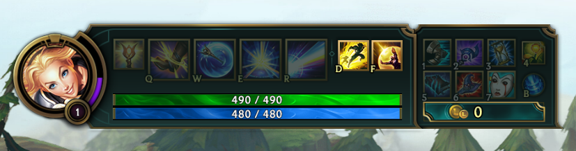
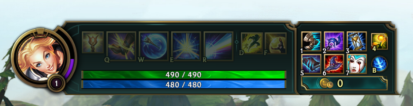

¿ QUÉ ES LEAGUE OF LEGENDS ?
League of Legends es un juego de estrategia por equipos en el que dos equipos de cinco campeones se enfrentan para ver quién destruye antes la base del otro. Elige de entre un elenco de 140 campeones para realizar jugadas épicas, asesinar rivales y derribar torretas para alzarte con la victoria.
Objetivo: DESTRUYE LA BASE ENEMIGA
El nexo es el corazón de las bases de los equipos. Para ganar la partida, hay que destruir el nexo enemigo.
Tu Nexo
- Súbditos, son unidades que avanzan a lo largo de una calle y atacan de forma automática a cualquier unidad o estructura enemiga que se cruce en su camino. Las hay cuerpo a cuerpo, a distancia y de asedio
- Fuente, es donde los campeones aparecen al comienzo de la partida, donde reaparecen después de morir y donde se teleportan cuando usan Retirada. Además, esta zona protege al equipo local, pues inflige grandes cantidades de daño a los oponentes que se adentran en ella
- Tienda,puedes comprar y vender objetos con el oro que hayas conseguido. Solo se puede acceder a ella desde la fuente
Los súbditos se generan en tu nexo. Detrás del nexo se encuentra la fuente, donde podrás recuperar vida y maná con rapidez y acceder a la tienda.
El Nexo Enemigo
El nexo enemigo, que se encuentra en la base del equipo contrario, es igual que el de tu equipo. Si acabas con él, ganarás la partida.
ÁBRETE PASO
Para llegar hasta el nexo enemigo, tu equipo tendrá que avanzar por al menos una calle. Hay estructuras defensivas que bloquean tu avance: las torretas y los inhibidores. Cada calle cuenta con tres torretas y un inhibidor. Además, cada nexo tiene dos torretas adicionales.
Torretas
- Niebla de guerra, esta cubre todo el mapa y limita el campo de visión de tu equipo. Elementos como las torretas, los súbditos y los guardianes desempeñan un papel crucial a la hora de aportar visión
Las torretas infligen daño a los súbditos y campeones enemigos, y ofrecen a su equipo un campo de visión limitado a través de la niebla de guerra. Ataca a estas estructuras con un grupo de súbditos delante, para que no te ataquen a ti, y sigue avanzando.
INHIBIDORES
- Supersúbditos, son súbditos cuerpo a cuerpo mucho más poderosos que los normales. Este tipo de súbditos elimina las oleadas de súbditos y las estructuras enemigas con mucha más facilidad.
A LA CONQUISTA DE LA JUNGLA:
Entre las calles se encuentra la jungla, en la que habitan monstruos neutrales y plantas mágicas. Los dos tipos de monstruos más importantes son el Barón Nashor y los dragones. Acabar con estas unidades otorgará a tu equipo mejoras únicas y, en ocasiones, te ayudará a darle la vuelta a la partida.
BARÓN NASHOR
El Barón Nashor es el monstruo más poderoso de toda la jungla. Asesinar al Barón otorga a tu equipo daño de ataque y poder de habilidad adicionales, una versión mejorada de Retirada y potencia significativamente a los súbditos que se encuentren cerca de un campeón con la mejora activa.
DRAGONES
Los dragones son monstruos muy poderosos que otorgan mejoras únicas en función del elemento al que pertenezcan. Hay cinco dragones elementales y un Dragón anciano.
ELIGE UNA CALLE
La composición de equipo más recomendada está integrada por cinco posiciones diferentes. Las características de cada una de las calles favorecen a ciertos tipos de campeones y roles. ¡Pruébalas todas o elige la que más te guste!
CALLE SUPERIOR
Los campeones de la calle superior son los luchadores solitarios por excelencia. Su trabajo es proteger su calle y centrarse en eliminar a las mayores amenazas del equipo enemigo.
JUNGLA
Los junglas dedican su partida a la caza. Se sirven de su destreza y sigilo para saltar de una calle a otra, se encargan de vigilar los monstruos neutrales más importantes y atacan en el momento preciso cuando un enemigo baja la guardia.
CALLE CENTRAL
Los campeones de la calle central cuentan con un gran daño explosivo y funcionan muy bien tanto de forma independiente como en equipo. Para ellos, el combate es una peligrosa danza que consiste en encontrar el momento idóneo para acabar con su rival.
CALLE INFERIOR
Los campeones de la calle inferior son la dinamita del equipo. Hay que protegerlos al comienzo de la partida para asegurarse de que consiguen suficiente oro y experiencia para llevar al equipo a la victoria.
APOYO
Los campeones de apoyo son los protectores del equipo. Mantienen con vida a sus aliados y se centran en que consigan asesinatos, así como en proteger a su compañero de la calle inferior hasta que se vuelva más fuerte.
MEJORA A TU CAMPEÓN
A medida que avanza la partida, los campeones se vuelven más fuertes al conseguir experiencia para subir de nivel y oro para comprar objetos más poderosos. Estos dos factores son esenciales para superar al equipo enemigo y destruir su base.
CONSIGUE EXPERIENCIA
Cuando los campeones consiguen una cantidad determinada de experiencia, suben de nivel, lo que les permite desbloquear o mejorar sus habilidades y aumenta sus estadísticas básicas. Asesina a unidades y campeones enemigos, asiste a tus compañeros en asesinatos y destruye estructuras defensivas para conseguir experiencia
CONSIGUE ORO
El oro es la divisa del juego, que te permite comprar objetos para tu campeón. Asesina a unidades y campeones enemigos, asiste a tus compañeros en asesinatos, destruye estructuras defensivas y hazte con objetos que lo generen para conseguir oro.
TIENDA
En la tienda puedes comprar y vender objetos con el oro que hayas conseguido. Solo se puede acceder a ella desde la fuente.
DESBLOQUEA HABILIDADES
Los campeones cuentan con cinco habilidades básicas y dos hechizos especiales, y pueden equiparse con un máximo de siete objetos. Para que tu equipo se alce con la victoria, tendrás que ir descubriendo cuál es el orden de habilidades, hechizos de invocador y la configuración de objetos óptimos para tu campeón.
HABILIDADES
- Pasiva, és una habilidad única que tiene cada campeón, esta otorga mejoras especiales y, en ocasiones, requiere que se cumplan ciertas condiciones. Al contrario que las demás habilidades, ya está disponible al comienzo de la partida y no se puede subir de nivel
- Básicas, son las habilidades de los campeones que están vinculades a las teclas Q, W y E, y se pueden subir de nivel durante la partida. En ocasiones, kanzarlas cuesta maná o tienen un tiempo de enfriamiento
- Definitiva, está vinculada a la tecla R, y estará disponible a partir del nivel 6. Las definitivas son las habilidades más decisivas e importantes de todas.
La mayoría de los campeones cuentan con un kit único compuesto por cinco habilidades: una pasiva, tres básicas y una definitiva. Estas habilidades están vinculadas a las teclas Q, W, E y R.
HECHIZOS DE INVOCADOR
- Destello, teleporta instantáneamente a tu campeón una corta distancia. Sirve para esquivar golpes letales o para reducir la distancia con una presa en una persecución.
- Teleportar, transporta a tu campeón a una torreta, súbdito o duardián de tu equipo en cualquier punto del mapa tras un breve retardo.
- Aplastar, inflige daño verdadero instantáneo a los monstruos y se considera un hechizo esencial para los junglas.
- Prender, inflige daño verdadero prolongado a los campeones enemigos
Los hechizos de invocador son habilidades con efectos únicos que los campeones pueden usar. Están vinculados a las teclas D y F. Hay muchos hechizos, pero los que se ven con más frecuencia son Destello, Teleportar, Aplastar y Prender.
OBJETOS
- Talismanes, son objetos únicos que se pueden conseguir gratis en la tienda. Sirven para obtener visión o para eliminar los guardianes enemigos.
Los objetos sirven para potenciar a tu campeón, pues aumentan su velocidad de movimiento o daño y reducen el enfriamiento de sus habilidades. Al contrario que los talismanes, cuestan oro.